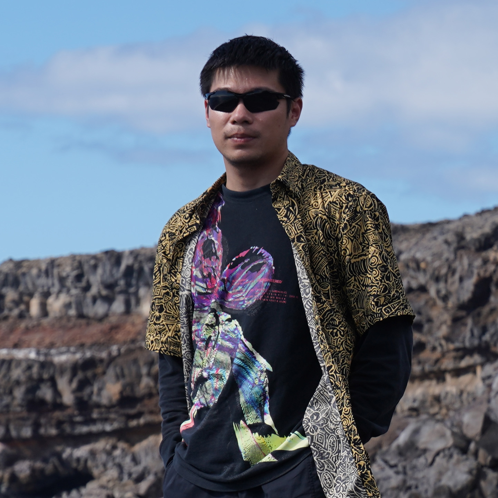

Wei Yue.
Building intelligence into
physical systems.
I am a Postdoctoral Scholar in Mechanical Engineering at the University of California, Berkeley, working with Professor Liwei Lin. I received my B.S. in Theoretical and Applied Mechanics from Peking University in 2021 and my Ph.D. in Mechanical Engineering from UC Berkeley in 2026.
My research spans microrobotics, magnetic actuation, smart materials, MEMS, and computational design. I have worked on untethered subcentimeter flying robots, bioinspired “bone-in-flesh” magnetic soft actuators, mobile microrobot collectives, and learning-assisted design of microdevices and material structures. My research has been published in journals including Science Advances, Advanced Functional Materials, and npj Computational Materials.
My long-term research vision is distributed physical intelligence. Rather than miniaturizing every subsystem of a conventional robot, I investigate how functionality can be distributed across computational design, the robot’s materials and structures, and programmable external fields. I am particularly interested in improving the stability, maneuverability, and coordination of miniature robotic systems while reducing their dependence on onboard hardware.

EXPLORE
Explore my work.
Research, publications, and academic milestones—each with a dedicated page.
Distributed physical intelligence.
Design, embody, and act: my approach to capable microrobotic systems.
EXPLORE RESEARCH ↗ 02 / PUBLICATIONSPublished work.
13 journal articles and 24 refereed conference publications, with featured papers.
VIEW PUBLICATIONS ↗ 03 / HIGHLIGHTSNews & honors.
Research coverage, journal cover features, fellowships, scholarships, and awards.
VIEW HIGHLIGHTS ↗04 / CONTACT
Let's build what's next.
Interested in microrobotics, magnetic actuation, and physical intelligence? I welcome conversations about research and collaboration.
wei_yue@berkeley.edu